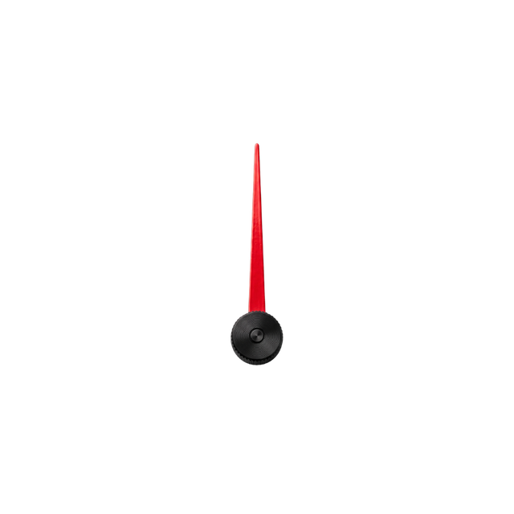

ローバーミニ MEMS診断
Bluetoothアダプター（ATOM Lite）経由で、エンジンのコンピューター（MEMS 1.3）のデータを表示します。
デモモード: 実車やアダプターが無くても、サンプルデータで画面をお試しいただけます。

Bluetoothアダプター（ATOM Lite）経由で、エンジンのコンピューター（MEMS 1.3）のデータを表示します。
デモモード: 実車やアダプターが無くても、サンプルデータで画面をお試しいただけます。
